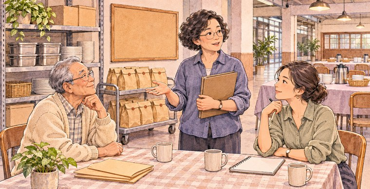

SUS-17 · 香港 · 10–15分鐘 · 義工協調 · 服務持續運作 · 有支援的參與
義工多，服務就可靠嗎？

本地義工參與實例
政府統計處記載，2024年4月20日，該處康樂會義工隊（Social Club Volunteer Team）有十名成員參與惜食堂的活動，為低收入家庭準備飯盒。這項記錄只反映義工參與了某次活動，既不是招募模式的比較，也不是可靠程度的估算。下文的主辦機構、人物、工作和成本均為本個案虛構設定。
課堂決定
你負責協調 Harbour Help 這個虛構的社區膳食支援計劃。受薪團隊已承諾在下月四個星期六提供服務。每個星期六，前期準備、派發和跟進各需要兩個一小時的協助崗位，即每星期六個，全月共24個。這些工作均有人督導，不涉及臨床服務，例如擺放桌子、點算已封口的袋子，以及記錄不含個人資料的存貨總數。食物處理、保障服務對象、管理個人紀錄及所有安全責任，仍由具備資格的受薪員工承擔。
在義工簡介會前，先選一個義工支援方案。方案 A 讓24名不同人士各參與一小時；方案 B 則讓六人參與，每人都希望每個星期六服務一小時。兩個方案均提供24人時，但尚未整理各人的時段偏好。A 的籌辦成本為600港元；B 包括定期聯絡及更表安排支援，成本為1,200港元。這些預算涵蓋全部新增支援開支及預計發還的費用，並非支付義工的勞務報酬。
目標是在為義工參與提供支援的同時，履行相同的服務承諾，並將新增總成本維持在較低水平。兩個方案均在負擔範圍內。現有的受薪後備安排可在有需要時補足全部24個協助崗位，每個實際填補的崗位收費100港元，已包括所有僱用成本。預留後備人手的費用已有撥款，兩個方案的金額相同。應急預算足以應付這個最壞情況。沒有僱員會失去受薪工作。義工可以拒絕參與或退出，不受處罰；任何服務承諾都不靠強制義工出席來履行。
| 初步方案 | 不重複義工人數 | 計劃人時 | 支援預算 |
|---|
| A：單次參與 | 24 | 24 | HK$600 |
| B：定期排班 | 6 | 24 | HK$1,200 |
你的決定你會暫時支持哪個方案？哪些按工作和時段列出的資料，可能令你改變選擇？
第二輪 · 多了一項資料
在敲定任何一個方案之前，協調員已與義工逐一作保密溝通，了解他們可參與的時段。按方案 A，每星期有六名不同的義工，但全都只能在派發的一小時到場。派發只需兩人；多出的人手無法在安全而有用的情況下，替代其他時段的準備或跟進工作。議定的服務範圍內沒有其他工作可做。按方案 B，六名定期參與的義工已自行選擇不同時段：每個星期六，兩人負責準備、兩人負責派發、兩人負責跟進。所有義工均已就所選崗位接受適當甄選及培訓；支援預算維持不變。
可參與時段表反映的是義工當前的意向，既不保證他們會出席，也不能證明定期參與的義工本身更可靠。受薪後備安排可填補已知的空缺，也可應付臨時退出。每次服務前，協調員都會確認義工能否出席，維持一個方便使用的取消渠道，並安排受薪人手填補任何空缺。無論採用哪個方案，督導所需人手、保險、實際開支及必要的無障礙調整均有撥款。義工若拒絕轉任其他崗位，應尊重其選擇；本項服務以外的自選參與機會須另行規劃。
你的決定有了這份可參與時段表，你會為哪個方案撥款？該方案的計劃總成本是多少？如果有人退出，你會怎樣確保服務如常？
講評：計算實際可填補的崗位
A 每個星期六只可填補兩個崗位，全月共8個。義工另外願意提供的16小時，與人手已足的工作時段重疊。義工的善意是真實的，但在計算服務人手時，不能把同一崗位重複計算。受薪團隊填補 24 − 8 = 16 個崗位。計劃新增成本為 600港元 + 16 × 100港元 = 2,200港元。按目前的時段表，B 可填補全部24個崗位，因此計劃成本為1,200港元。雖然 B 的支援預算較高、參與人數較少，但就這項服務而言，成本仍低1,000港元。
有更表不等於有保證
這項比較以義工申報的可參與時段為依據，並非以估算的出席概率為依據。無論採用哪個方案，每多一個意外出現的空缺，成本便增加100港元；這裏並未估算會有多少次取消。B 仍須指派一名協調員，建立例行確認安排，為後備人手預留經費，並提供尊重義工意願的退出渠道。即使所有義工退出，整項服務仍有人手應付。若確有合適的工作，單次參與的義工小組也可以發揮作用。這項計算並非為義工評定高下，也不是說定期參與在任何情況下都較好。
教師說明
先區分參與人數、義工願意提供的人時，以及按工作和時段實際可填補的崗位。在公布可參與時段表之前，請學生就 A 較低的初期支援成本提出辯護。其後，要求學生交代 8/16/24 三個數字如何對上，並提出後備方案，而不只是說「選 B」。可以討論重新設計方案，但若改變服務內容，或改動義工按自己意願申報的可參與時段，便是提出新方案，不能當作原有方案的隱含假設。不要把義務工作等同無償強制勞動，也不要把英國僱傭規則當作香港法律意見。
第二輪
在敲定任何一個方案之前，協調員已與義工逐一作保密溝通，了解他們可參與的時段。按方案 A，每星期有六名不同的義工，但全都只能在派發的一小時到場。派發只需兩人；多出的人手無法在安全而有用的情況下，替代其他時段的準備或跟進工作。議定的服務範圍內沒有其他工作可做。按方案 B，六名定期參與的義工已自行選擇不同時段：每個星期六，兩人負責準備、兩人負責派發、兩人負責跟進。所有義工均已就所選崗位接受適當甄選及培訓；支援預算維持不變。
可參與時段表反映的是義工當前的意向，既不保證他們會出席，也不能證明定期參與的義工本身更可靠。受薪後備安排可填補已知的空缺，也可應付臨時退出。每次服務前，協調員都會確認義工能否出席，維持一個方便使用的取消渠道，並安排受薪人手填補任何空缺。無論採用哪個方案，督導所需人手、保險、實際開支及必要的無障礙調整均有撥款。義工若拒絕轉任其他崗位，應尊重其選擇；本項服務以外的自選參與機會須另行規劃。
你的決定有了這份可參與時段表，你會為哪個方案撥款？該方案的計劃總成本是多少？如果有人退出，你會怎樣確保服務如常？